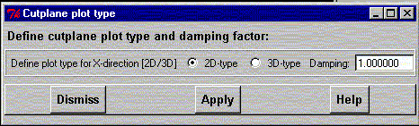

**************************************************************************
Cutplane plot type widget
Leif Laaksonen CSC 1999
**************************************************************************
Define the plot type 2D or 3D for a cutplane by clicking your choice. The 3D effect is arbitrary and can be altered (decreased/increased) through the damping constant. A value smaller than 1.0 is damping and a value greater than 1.0 is magnification.

Line command: see plot command
**************************************************************************
LUL/1999
**************************************************************************